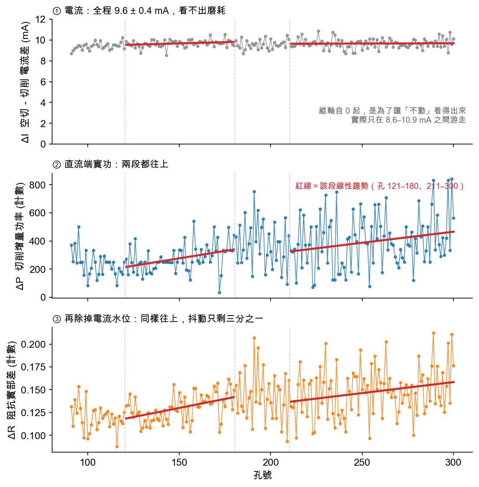
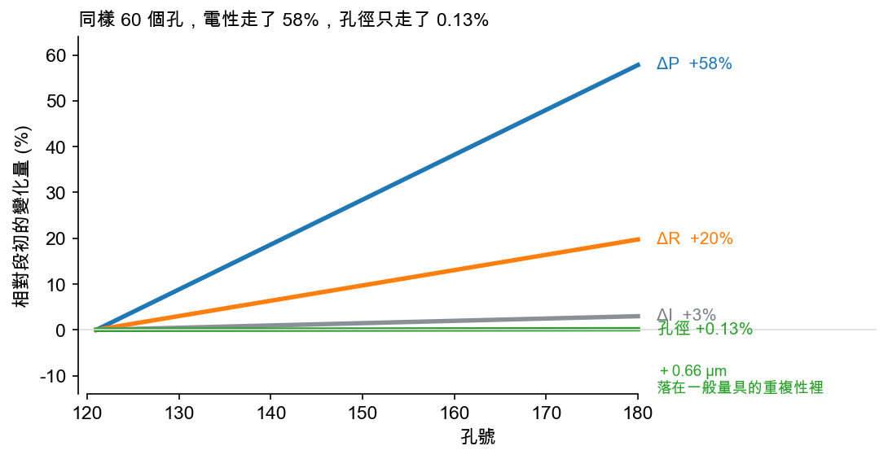
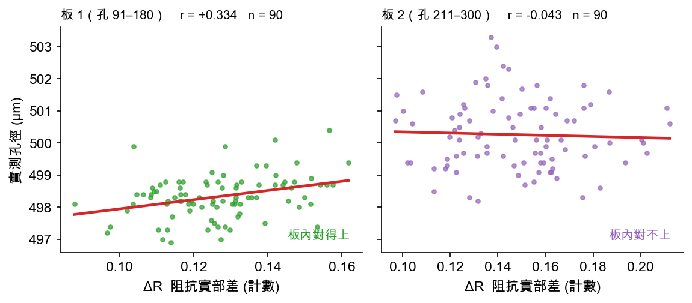
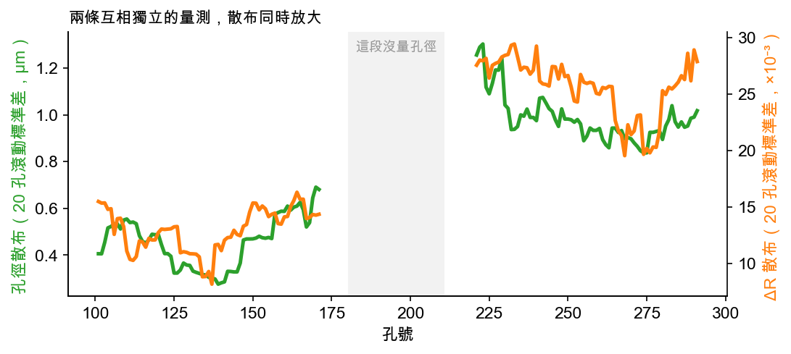

一、這套方法在做什麼
設備是 CNC 超音波輔助微鑽孔：G83 啄鑽循環、換能器工作在 28.6 kHz 附近、UD7 驅動器、工件是氮化鋁（AlN）、鑽頭直徑 0.5 mm。我們不裝額外感測器，只讀驅動器本來就在輸出的紀錄檔。
每一啄分成兩相：刀尖吃到料的切削相，跟刀退出來空轉的空切相。把同一個孔內這兩相的電性量相減，就得到三個候選指標。
| 指標 | 怎麼算 | 它在物理上是什麼 | 對磨耗敏感嗎 |
|---|---|---|---|
| ΔI | 空切電流 − 切削電流 | 電流幅值的變化量 | 不敏感。全程 9.62 ± 0.41 mA |
| ΔP | 切削相 − 空切相的直流端實功 | 刀尖真正吃掉的功率 | 敏感。單調上升 |
| ΔR | ΔP ÷ 電流平方 | 機械阻尼折算成的等效電阻 | 敏感，而且更乾淨 |
「直流端實功」指的是驅動器裡降壓級（Buck）的輸出電壓乘輸出電流。它是真正被送出去、不會退回來的那份功率——跟示波器上看到的振盪電流幅值是兩回事。這個區別是整篇文章的樞紐。
二、機制：電流不動，功率卻動
這裡是最反直覺的一段。刀變鈍、切削阻力變大，照常理電流應該上升；實際上電流幾乎不動，而且它本來就是往下掉的。
原因在驅動器的控制策略。往下按一次看一步。
按「下一步」，從刀刃開始走一遍這條因果鏈。
一個機械人比較好進的類比
定速巡航的車子上坡。車速錶（＝振幅）幾乎不動，因為巡航系統就是要它不動。真正變的是油門開度與油耗。你要判斷坡有多陡，看時速表永遠看不出來，得看瞬間油耗。
在這裡，時速表是振幅設定值 VFB，油耗是 Buck 端實功 P_buck。
一個容易搞反的方向。切削時電流不是上升，是下降約 9.6 mA。定振幅閉環底下，負載加重會把工作點推離共振尖峰，電流幅值反而降。所以判定「這一啄有沒有在切」的門檻是 IFB < 84 mA，方向跟直覺相反。
那為什麼不用「電壓乘電流」就好
因為那算出來的是視在功率，不是真正被消耗掉的功率。負載變化主要改的是電壓與電流之間的相位差，幅值變化很小。相位資訊在幅值乘積裡被抹掉了。
先前分析對這件事有一個直接讀數：振幅設定值乘電流（VFB × IFB，也就是視在功率）與 ΔP 的相關係數是 0.06——等於零。負載資訊完全不在那條路上。
三、資料長什麼樣：三個通道並排
下面是氮化鋁板上 91 到 300 號孔、共 210 個孔的逐孔結果。虛線是不同記錄檔的邊界；紅線是該段的線性趨勢。

usm-drilling-analysis/holes_all.xlsx（2026-06-12 孔號更正重建版）· 本次重算三件事值得停下來看。
ΔI：好用的切削偵測器，沒用的磨耗計
它穩定在 9.62 ± 0.41 mA，變異係數只有 4.3%。這個 9.6 mA 的落差非常可靠，用來切分切削相／空切相綽綽有餘。但它在整整 210 個孔裡幾乎沒有趨勢——孔 211 到 300 那段的斜率檢定 t = +0.22，等於沒有。刀在變鈍，這個指標一無所知。
ΔP：兩段都在漲
孔 121 到 180 每孔 +2.11（t = 3.09），孔 211 到 300 每孔 +1.58（t = 2.13）。這是刀具負載持續累積的主證據。
ΔR：漲得一樣，但抖得少很多
孔 121 到 180 這段，ΔP 的變異係數是 0.353，ΔR 是 0.118——只剩三分之一。孔 211 到 300 是 0.469 對 0.180，同樣的比例。因為 ΔR 已經把電流水位的緩慢漂移扣掉，剩下的比較接近純粹的阻尼變化。
為什麼除以電流平方就能扣掉水位。電功率的基本式是 P = I²R。反過來 R = P / I²，得到的就是等效電阻，也就是機械阻尼折算到電路上的那一項（阻抗的實部）。電流水位若因為溫度或重新夾持而整體漂了幾個百分點，ΔP 會跟著漂，ΔR 不會。
注意單位：這裡的 R 是驅動器紀錄的原始計數，不是校準過的歐姆值。只看相對變化，不看絕對值。
四、「提前」到底是什麼意思
這個詞在工廠裡常被含混使用，值得拆成兩個不同的主張。
| 主張 | 意思 | 本文資料支持嗎 |
|---|---|---|
| 放大 | 同一段磨耗，電性的相對變化比幾何量大得多，所以更早越過可偵測門檻 | 支持，而且可量化 |
| 領先 | 電性先動，孔壁品質過一段時間才動——時間上真的有落後 | 只有觀察，沒有乾淨證據 |
放大：四百倍
取孔 121 到 180 這 60 個孔——這段電性與孔徑都有顯著趨勢，可以蘋果對蘋果比。把每條線都換算成「相對這 60 孔起點走了百分之幾」：

孔徑確實在變大——每孔 +0.0111 µm，統計上顯著（t = 2.96）。但 60 個孔加起來只有 0.66 µm，相對 500 µm 的孔徑是 0.13%。這個量落在一般量具的重複性裡，現場靠抽檢基本上讀不出來。
同一段時間，ΔP 走了 58%。比值大約 440 倍。
這就是「提前」的真正機制：不是電性有預知能力，而是同一個物理事件在不同量測上的相對幅度差了兩個數量級。訊號大兩個數量級，你就能在小得多的磨耗量上做出可信判斷——時間上自然提早。
領先：目前只有觀察
石英鑽孔那一輪有個側面觀察：電性在第 100 到 200 孔之間就在升，而彥皓在現場是第 200 孔起才看到入孔脆裂邊明顯變大。方向吻合，但那是目視判斷、沒有逐孔量化，不足以當作「領先幾孔」的證據。
本文不主張時間上的領先。要證明領先，需要同一批孔上兩條逐孔量化曲線的轉折點比較。目前手上沒有。放大是已證的，領先是待驗的。
五、電性對得上實體孔嗎
放大再漂亮，如果對不上實際加工品質也沒用。氮化鋁這批有 180 個孔用光學量測拍過孔徑，可以直接 join。

hole_quality_join.csv · 本次重算結果是一半好消息、一半壞消息，而且壞的那一半必須講在前面。
板 1（孔 91–180）對得上。ΔR 與孔徑相關係數 +0.334，樣本 90 個孔，統計上顯著。同一段孔徑本身也在單調變大（每孔 +0.0178 µm，t = 8.85）。這是電性與實體互相印證的那一段。
板 2（孔 211–300）對不上。相關係數 −0.043，等於沒有。而且這段孔徑本身也不再有趨勢（t = 0.81）。它已經整體上移到 500.26 µm，比板 1 的 498.33 µm 高了約 1.9 µm，然後就停在那裡抖。
一個必須自己拆掉的數字。兩塊板合併算，相關係數是 +0.354，看起來很漂亮。但那個數字有一部分只是兩塊板之間的水位差被當成了相關性——板 2 的孔徑水位高、ΔR 水位也高，合併之後自動製造出正斜率。
能撐得住的說法只有一句：板內對得上（r = +0.334，n = 90），板間不可比。
還有一條獨立的證據：散布同時放大
除了水位，還有一件事值得看——抖動的幅度。刀鈍到一定程度，加工會開始不穩定，同樣的程式跑出來的孔開始參差。

板 1 前 20 孔的孔徑標準差是 0.406 µm，後 20 孔是 0.681 µm；到板 2 已經是 1.0 µm 以上。ΔR 的散布同一時間也翻倍。
這兩條線來自兩套完全獨立的量測——一套是光學量孔徑，一套是驅動器讀電。它們沒有共用任何感測器、任何訊號路徑。兩者同步放大，比單看其中一條的趨勢更難用巧合解釋。
六、實際怎麼用：兩層判斷
直接拿 ΔR 的絕對值判刀況會出事。原因在後面第七節，這裡先給可以照做的版本。
第一層先問「機器現在到底在不在鑽孔」。程式空跑、刀斷了之後的空轉，電性水位跟真實鑽孔差得出來（石英那輪是 0.33 對 0.30，約 10%）。這些段落如果混進趨勢裡，會把後面的判斷整個帶歪。
第二層才在乾淨的鑽孔段上追累積升幅。經驗值是升幅 3% 到 5% 觸發換刀準備。
三條前置紀律，缺一不可：頻率校正（見下節）、只取真實鑽孔段、用夠長的滾動窗。窗太短會被追頻週期的擺動騙——石英那輪用 50 孔窗算出來的斜率會亂跳，換成 90 孔窗才穩。
七、這套方法在哪裡會失效
這節比前面六節都重要。以下每一條都是實際踩過的。
前提：驅動器必須是定振幅閉環
整條因果鏈建立在「閉環不准振幅掉」上。如果換一台定電壓或開環驅動的機器，負載變化會直接反映在電流上，指標的方向與意義都要重新推導。換驅動器等於整套重來。
ΔR 的絕對水位不能拿來判斷空載或負載
這條最反直覺。石英那輪量到：新刀初期的負載電阻反而低於空載（0.503 對 0.537），要等磨耗累積之後才升過空載水位（0.544）。也就是說「負載比空載高」這件事本身會隨刀況翻轉。絕對水位不可判相，只能看相對趨勢。
追頻鋸齒會蓋住磨耗
驅動器會自動追蹤共振頻率。當熱漂移把頻率推到追頻範圍邊界，它會跳回初始鎖頻點，於是電阻曲線出現週期性鋸齒。石英那輪的鋸齒振幅是 ±10%，而要找的磨耗訊號只有 4% 到 10%——訊號整個被埋掉。
去掉鋸齒的方法要對症：先量電阻對頻率的線性程度，線性強就對頻率做回歸校正，線性弱就改成按追頻週期取中位數。套錯方法會得到符號相反的結論。這也決定了解析度下限——一個追頻週期大約 45 孔，比這更細的「哪 50 孔升最快」不可靠。
跨輪、跨儀測鏈都不可比
清潔筒夾、重新夾刀、換記錄格式，都會搬動空載零點本身。零點動了，同樣算出來的百分比升幅就不在同一把尺上。每一輪只跟自己比，換刀決策用「距離自己這輪的預警里程」，不用跨輪倍數。
訊號強度是材料給的，不是方法給的
氮化鋁上 ΔP 一段能走 58%。換到石英，切削負載天生就弱——每一啄的切削相只有 0.5 秒，而驅動器取樣週期就是 0.5 秒，等於整個切削相只有一個取樣點。所有刀況事件的電性變化都被壓在 4% 到 10% 之間。方法能不能用，取決於材料肯給多少訊號。
八、資料與可重現性
本文所有圖表與統計量於 2026-08-25 重新計算。資料來自兩個檔案：
usm-drilling-analysis/holes_all.xlsx——213 孔，孔 88–300，2026-06-12 孔號更正重建版hole_quality_join.csv——180 孔的光學孔徑量測
孔 88–90 因記錄不完整（只錄到 5.7 分鐘）未納入分析。
兩個未在本次重算的數字，來自先前分析紀錄：視在功率與 ΔP 的相關係數 0.06；石英輪的水位、鋸齒與訊號強度讀數。引用時請回原始分析檔覆核。
另有一份已作廢的檔案：USM_鑽孔118-210_逐孔電性指標.xlsx（2026-06-11 版）孔號標定錯誤、漏掉孔 90–120 整段，不可再引用。